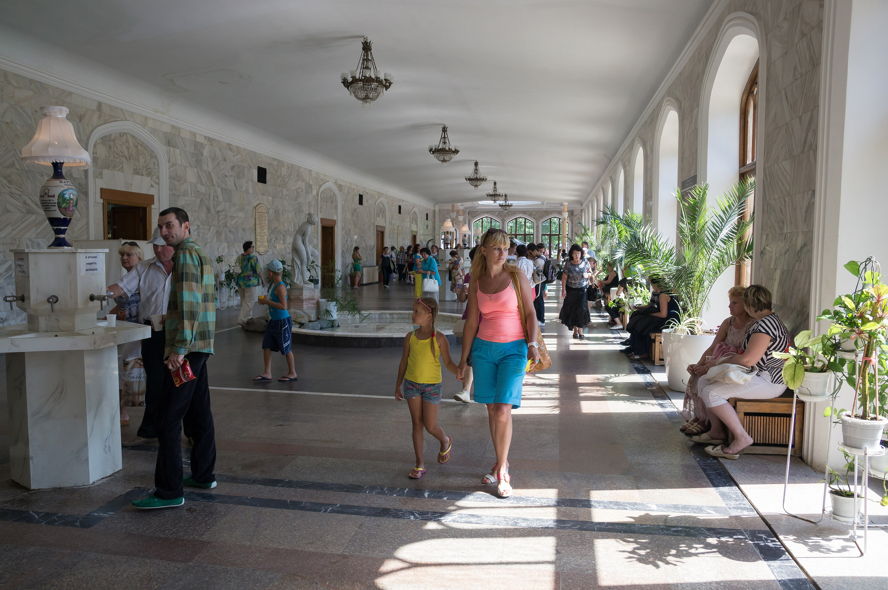

1
Кисловодский национальный парк
Один из крупнейших городских парков Европы с терренкурами и смотровыми маршрутами.
☁️ Погода обновляется
Зелёный курорт с огромным национальным парком, нарзанами и прогулочными маршрутами.

Один из крупнейших городских парков Европы с терренкурами и смотровыми маршрутами.
Историческая питьевая галерея XIX века — символ курортного Кисловодска.
Узнаваемый вход в Кисловодский национальный парк.

Открой для себя Кавказ с высоты птичьего полёта.